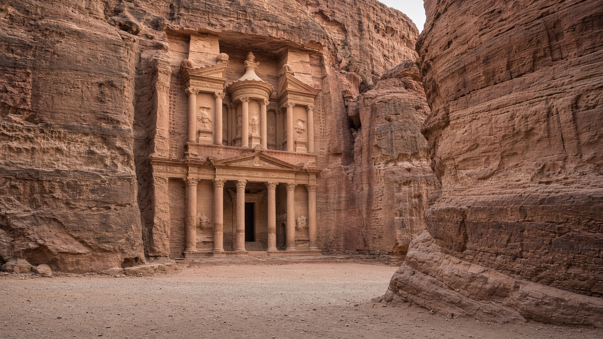

آسيا · المشرق
الأردن
Jordan
بترا والبحر الميت، وممر هادئ للعمل والتنقّل.
- العاصمة
- عمّان
- نظام الحكم
- مملكة — ملكية دستورية
- الاستقلال
- 25 مايو 1946
- النوع
- ملكية
منذ التأسيس
استقلت إمارة شرق الأردن في 25 مايو 1946 وصارت المملكة الأردنية الهاشمية. ملكية دستورية عاصمتها عمّان.
معالم
- معلمالبتراء
الخزنة المنحوتة في الحجر الوردي.
- طبيعةوادي رم
أقواس رملية وسماء جنوبية.
- طبيعةالبحر الميت
أخفض يابسة على وجه الأرض.